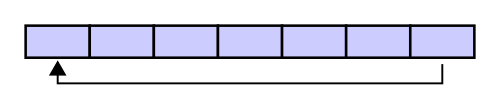
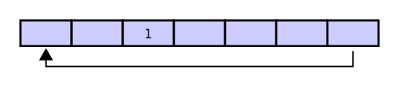
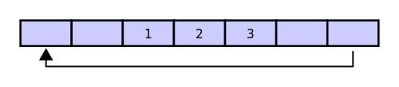
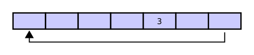
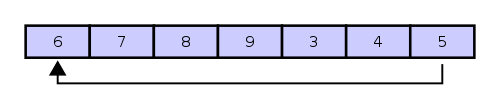

- Getting the Skeleton Files
- Introduction
- Task 1: BoundedQueue
- Task 2: AbstractBoundedQueue
- Task 3: ArrayRingBuffer
- Task 4: GuitarString
- Just For Fun: TTFAF
- Even More Fun
- Why It Works
- Task 5: Iteration and Exceptions
- Submission
- Frequently Asked Questions
- My AbstractBoundedQueue won’t compile because BoundedQueue isn’t found.
- I’m getting a “class file contains wrong class” error.
- I’m getting a message that I did not override an abstract method, but I am!
- I’m getting … in AbstractBoundedQueue and … in BoundedQueue have the same erasure, yet neither overrides the other.
- When I try to run the provided tests I get “No runnable methods”.
- I’m failing the nested iteration test. What does this mean?
- When I try to compile my code, it says type K#1 is not compatible with type K#2, or something similar.
- I’m getting a strange autograder error!
- Do I need to implement
remove()from the Iterator interface?
Getting the Skeleton Files
Just the usual git pull skeleton master.
Introduction
In this homework, you will learn how to write and use packages, as well as get some hands-on practice with interfaces and abstract classes. We’ll also get an opportunity to implement a simple data structure as well as an algorithm that’s easy to implement using that data structure. Finally, we’ll add support for iteration and exceptions (which we’ll cover on Friday) to our data structure.
As mentioned in class, a package is a namespace that organizes a set of related classes and interfaces. Conceptually, you can think of packages as being similar to different folders on your computer. When you are building a large system, it is a good idea to organize it into different packages.
For this assignment, we’ll create a synthesizer package intended for use by programs that want to simulate the sound of instruments.
The synthesizer package has four components:
BoundedQueue, an interface which declares all the methods that must be implemented by any class that implementsBoundedQueue.AbstractBoundedQueue, an abstract class which implementsBoundedQueue, capturing the redundancies between methods inBoundedQueue.ArrayRingBuffer, a class which extendsAbstractBoundedQueueand uses an array as the actual implementation of theBoundedQueue.GuitarString, which uses anArrayRingBuffer<Double>to implement the Karplus-Strong algorithm to synthesize a guitar string sound.
We’ve provided you with skeleton code for ArrayRingBuffer and GuitarString,
but you’ll need to implement the other two classes from scratch. In this HW,
we’ll work our way down the hierarchy from most abstract to most concrete.
Note: while it’d probably be better design to make only the GuitarString class
public (since people using synthesizers don’t really care about
AbstractBoundedQueues), we’ll be leaving all of our classes public for this HW
for testing convenience.
Task 1: BoundedQueue
Review: What is an Interface? Why would you want one?
As discussed in class, an interface is a formal contract between a class and the
outside world. If your class claims to implement an interface, then all methods
defined by that interface must appear in your class (or somewhere in your
superclass) before the class will successfully compile.
This is a way of enforcing promised behavior.
All methods that you declare or define are automatically public and abstract
(even if you omit the public keyword).
Your Task
We will start by defining a BoundedQueue interface. The BoundedQueue is similar to our Deque from Project 1, but with a more limited API. Specifically, items can only be enqueued at the back of the queue, and can only be dequeued from the front of the queue. Unlike our Deque, the BoundedDeque has a fixed capacity, and nothing is allowed to enqueue if the queue is full.
Create a file BoundedQueue.java in the synthesizer folder. You can do this
easily in IntelliJ by right-clicking on the synthesizer folder in the project
structure sidebar and click New -> Java Class. Be sure to set “Kind” to
“Interface”.
Your BoundedQueue interface should contain the following methods:
int capacity(); // return size of the buffer
int fillCount(); // return number of items currently in the buffer
void enqueue(T x); // add item x to the end
T dequeue(); // delete and return item from the front
T peek(); // return (but do not delete) item from the front
You should also create default methods isEmpty() and isFull() that return
the appropriate answer if the BoundedQueue is empty or full.
default boolean isEmpty() // is the buffer empty (fillCount equals zero)?
default boolean isFull() // is the buffer full (fillCount is same as capacity)?
For example, given an empty BoundedQueue<Double> of capacity 4, the state of
the queue after each operation is shown below:
isEmpty() // (returns true)
enqueue(9.3) // 9.3
enqueue(15.1) // 9.3 15.1
enqueue(31.2) // 9.3 15.1 31.2
isFull() // 9.3 15.1 31.2 (returns false)
enqueue(-3.1) // 9.3 15.1 31.2 -3.1
isFull() // 9.3 15.1 31.2 -3.1 (returns true)
dequeue() // 15.1 31.2 -3.1 (returns 9.3)
peek() // 15.1 31.2 -3.1 (returns 15.1)
Of course, your BoundedQueue.java file won’t actually do anything (since it’s
an interface), but it will define the contract that any BoundedQueue must
follow.
Make sure to decare this interface as part of the synthesizer package. The
syntax for declaring yourself to be part of a package is package <packagename>;.
For example, if you are part of the animal package, the top of your file
should have a package animal; line. Your package name should just be
synthesizer, nothing else. (If you created the file using IntelliJ, this
should have already been done for you.)
Before moving on, ensure that there are no compilation errors in BoundedQueue.
If you’re stuck, see the List61B interface for an example of an interface declaration with generics.
Task 2: AbstractBoundedQueue
Review: What is an Abstract Class? Why would you want one?
Methods and classes can be declared as abstract using the abstract keyword.
Abstract classes cannot be instantiated, but they can be subclassed using the
extends keyword. Unlike interfaces, abstract classes can provide
implementation inheritance for features other than public methods, including
instance variables.
Classes that implement interfaces will inherit all of the methods and variables from that interface. If an implementing class fails to implement any abstract methods inherited from an interface, then that class must be declared abstract, as in:
public abstract class AbstractBoundedQueue
As an aside, it is also possible to declare additional abstract methods. To do so, the method must be defined with the abstract keyword and without an implementation (without braces, and followed by a semicolon), like this:
abstract void moveTo(double deltaX, double deltaY);
We won’t explicitly define any non-inherited methods as abstract in HW1, but it’s a thing you might find useful someday.
Your Task
Create a new abstract class in a .java file called AbstractBoundedQueue.java
that implements BoundedQueue. Your AbstractBoundedQueue class should have
the following methods and fields (field is just another word for instance variable):
protected int fillCount;
protected int capacity;
public int capacity()
public int fillCount()
public boolean isEmpty()
public boolean isFull()
public abstract T peek();
public abstract T dequeue();
public abstract void enqueue(T x);
Note that isEmpty, isFull, peek, dequeue, enqueue, are inherited from
BoundedQueue, so you should not to declare these explicitly in your
AbstractBoundedQueue.java file. The mysterious protected keyword above is
something we’ll talk about in lecture on 2/21. It just means that only
subclasses of AbstractBoundedQueue and classes in the same package as
AbstractBoundedQueue can access this variable.
The purpose of AbstractBoundedQueue will be to simply provide a protected
fillCount and capacity variable that all subclasses will inherit, as well as
so called “getter” methods capacity() and fillCount() that return capacity
and fillCount, respectively. This saves a tiny amount of work for future
implementations like ArrayRingBuffer.java (see next section).
Side Note: When to use an Interface Versus an Abstract Class
In practice, in can be a little unclear when to use an interface and when to use an abstract class. One mostly accurate metaphor that might help is that you can think of an interface as defining a “can-do” or an “is-a” relationship, whereas an abstract class should be a stricter “is-a” relationship. The difference can be subtle, and you can often use one instead of the other.
In practice, large Java libraries often have a hierarchy of interfaces, which
are extended by abstract classes that provided default implementations for some
methods, and which are in turn ultimately implemented by concrete classes. A
good example is the Collection interface: It extends Iterable (which is its
superinterface), and is implemented by many subinterfaces (i.e. List, Set, Map),
which in turn have their own abstract implementations (AbstractList, AbstractSet
AbstractMap). However, for smaller programs, the hierarchy is often stubbier,
sometimes starting with an abstract class. For example, we could have just
started with AbstractBoundedQueue at the top of the hierarchy and skipped
having a BoundedQueue interface altogether.
Task 3: ArrayRingBuffer
The ArrayRingBuffer class will do all the real work by extending
AbstractBoundedQueue. That means we can happily inherit capacity(),
fillCount(), isEmpty(), and isFull() without having to override these, but
we’ll need to override all of the the abstract methods. In this part, you’ll
fill out ArrayRingBuffer.java. You’ll need to rename the file from
ArrayRingBuffer.java.skeleton to ArrayRingBuffer.java.
A naive array implementation of a BoundedQueue would store the newest item at position 0, the second newest item in position 1, and so forth. This is an inefficient approach, as we see in the example below, where the comments show entries 0, 1, 2, and 3 of the array respectively. We assume that the array is initially all nulls.
BoundedQueue x = new NaiveArrayBoundedQueue(4);
x.enqueue(33.1) // 33.1 null null null
x.enqueue(44.8) // 33.1 44.8 null null
x.enqueue(62.3) // 33.1 44.8 62.3 null
x.enqueue(-3.4) // 33.1 44.8 62.3 -3.4
x.dequeue() // 44.8 62.3 -3.4 null (returns 33.1)
Note that in this setup, the call to dequeue is very slow as it requires
moving every single item to the left. For larger arrays this would result in
unacceptable performance.
The ArrayRingBuffer will improve this runtime substantially by using the ‘ring buffer’ data structure, similar to the circular array from Project 1A. A ring buffer first starts empty and of some predefined length. For example, this is a 7-element buffer:

Assume that a 1 is written into the middle of the buffer (the exact starting location does not matter in a ring buffer):

Then assume that two more elements are added — 2 and 3 — which get appended after the 1. Here, it is important that the 2 and 3 are placed in the exact order and places shown:

If two elements are then removed from the buffer, the oldest two values inside the buffer are removed. The two elements removed in this case are 1 and 2, leaving the buffer with just a 3:

If we then enqueue 4, 5, 6, 7, 8, and 9, the ring buffer is now as shown below:

Note that the 6 was enqueued at the leftmost entry of the array (i.e. the buffer wraps around, like a ring). At this point, the ring buffer is full, and if another enqueue() is performed, then an Exception will occur. You will manually throw this Exception. See the section labeled Iteration and Exceptions at the end of this HW for more.
We recommend you maintain one integer instance variable first that stores the
index of the least recently inserted item; maintain a second integer instance
variable last that stores the index one beyond the most recently inserted
item. To insert an item, put it at index last and increment last. To remove
an item, take it from index first and increment first. When either index
equals capacity, make it wrap-around by changing the index to 0. Our skeleton
file provides starter code along these lines. You’re welcome to do something
else if you’d like, since these variables are private and thus our tester will
not be able to see them anyway.
In the last section of this homework, we’ll implement our ArrayRingBuffer to
throw a run-time exception if the client attempts to enqueue() into a full
buffer or call dequeue() or peek() on an empty buffer. We’ll be covering
exceptions on Monday, so hold off until then (or read ahead in HFJ or online).
Once you’ve fleshed out the TODOs, make sure ArrayRingBuffer compiles before
moving on. Optionally, you can add tests to the TestArrayRingBuffer class
(either before or after your write ArrayRingBuffer).
TestArrayRingBuffer.java will not be graded.
For homeworks and labs (but not projects), you’re welcome to share test code. Feel free to share your tests for this homework on Piazza.
Task 4: GuitarString
Finally, we want to flesh out GuitarString, which uses an ArrayRingBuffer to
replicate the sound of a plucked string. We’ll be using the Karplus-Strong
algorithm, which is quite easy to implement with a BoundedQueue.
The Karplus-Algorithm is simply the following three steps:
- Replace every item in a BoundedQueue with random noise (double values between -0.5 and 0.5).
- Remove the front double in the BoundedQueue and average it with the next
double in the BQ (hint: use
dequeue()andpeek()) multiplied by an energy decay factor of 0.996. - Play the double that you dequeued in step 2. Go back to step 2 (repeating forever).
Or visually, if the BoundedQueue is as shown on the top, we’d dequeue the 0.2, combine it with the 0.4 to form 0.2988, enqueue the 0.2988, and play the 0.2.

You can play a double value with the StdAudio.play method. For example
StdAudio.play(0.333) will tell the diaphragm of your speaker to extend itself to
1/3rd of its total reach, StdAudio.play(-0.9) will tell it to stretch its little
heart backwards almost as far as it can reach. Movement of the speaker diaphragm
displaces air, and if you displace air in nice patterns, these disruptions will
be intepreted by your consciousness as pleasing thanks to billions of years of
evolution. See this page
for more. If you simply do StdAudio.play(0.9) and never play anything again, the
diaphragm shown in the image would just be sitting still 9/10ths of the way
forwards.
Rename GuitarString.java.skeleton to GuitarString.java. Complete
GuitarString.java so that it implements steps 1 and 2 of the Karplus-Strong
algorithm. Step 3 will be done by the client of the GuitarString class.
Make sure to import javalib into your project, as usual, otherwise StdAudio won’t work.
For example, the provided TestGuitarString class provides a sample test
testPluckTheAString that attempts to play an A-note on a guitar string. You
should hear an A-note when you run this test. If you don’t, you should try the
testTic method and debug from there. Consider adding a print or toString
method to GuitarString.java that will help you see what’s going on between
tics.
Just For Fun: TTFAF
Once you’re relatively comfortable that GuitarString should be working, rename the rest
of the .java.skeleton files to .java and try running TTFAF. Make sure your sound is on!
You can read the GuitarPlayer and TTFAF classes to figure out how they work. TTFAF
in particular includes (as commented-out code) an example of how to use it another way.
GuitarHeroLite
You should now also be able to use the GuitarHero class. Running it will provide
an interface, allowing the user (you!) to interactively play sounds using the
synthesizer package’s GuitarString class.
Consider writing a program GuitarHero that is similar to GuitarHeroLite, but supports a total of 37 notes on the chromatic scale from 110Hz to 880Hz. Use the following 37 keys to represent the keyboard, from lowest note to highest note:
String keyboard = "q2we4r5ty7u8i9op-[=zxdcfvgbnjmk,.;/' ";
This keyboard arrangement imitates a piano keyboard: The “white keys” are on the qwerty and zxcv rows and the “black keys” on the 12345 and asdf rows of the keyboard.
The ith character of the string keyboard corresponds to a frequency of $440 \cdot 2^{(i - 24) / 12}$, so that the character ‘q’ is 110Hz, ‘i’ is 220Hz, ‘v’ is 440Hz, and ‘ ‘ is 880Hz. Don’t even think of including 37 individual GuitarString variables or a 37-way if statement! Instead, create an array of 37 GuitarString objects and use keyboard.indexOf(key) to figure out which key was typed. Make sure your program does not crash if a key is pressed that does not correspond to one of your 37 notes.
This part of the assignment is not graded.
Even More Fun
- Harp strings: Flipping the sign of the new value before enqueueing it in tic() will change the sound from guitar-like to harp-like. You may want to play with the decay factors to improve the realism, and adjust the buffer sizes by a factor of two since the natural resonance frequency is cut in half by the tic() change.
- Drums: Flipping the sign of a new value with probability 0.5 before enqueueing it in tic() will produce a drum sound. A decay factor of 1.0 (no decay) will yield a better sound, and you will need to adjust the set of frequencies used.
- Guitars play each note on one of 6 physical strings. To simulate this you can divide your GuitarString instances into 6 groups, and when a string is plucked, zero out all other strings in that group.
- Pianos come with a damper pedal which can be used to make the strings stationary. You can implement this by, on iterations where a certain key (such as Shift) is held down, changing the decay factor.
- While we have used equal temperament, the ear finds it more pleasing when musical intervals follow the small fractions in the just intonation system. For example, when a musician uses a brass instrument to play a perfect fifth harmonically, the ratio of frequencies is 3/2 = 1.5 rather than 27/12 ∼ 1.498. Write a program where each successive pair of notes has just intonation.
This part of the assignment is not graded.
Why It Works
The two primary components that make the Karplus-Strong algorithm work are the ring buffer feedback mechanism and the averaging operation.
- The ring buffer feedback mechanism. The ring buffer models the medium (a string tied down at both ends) in which the energy travels back and forth. The length of the ring buffer determines the fundamental frequency of the resulting sound. Sonically, the feedback mechanism reinforces only the fundamental frequency and its harmonics (frequencies at integer multiples of the fundamental). The energy decay factor (.996 in this case) models the slight dissipation in energy as the wave makes a round trip through the string.
- The averaging operation. The averaging operation serves as a gentle low-pass filter (which removes higher frequencies while allowing lower frequencies to pass, hence the name). Because it is in the path of the feedback, this has the effect of gradually attenuating the higher harmonics while keeping the lower ones, which corresponds closely with how a plucked guitar string sounds.
Task 5: Iteration and Exceptions
As an exercise in making your data structures more industrial strength, we’ll add the ability to iterate through a BoundedQueue and also ensure that it throws exceptions when given invalid inputs. We’ll cover these topics on Friday 2/16.
BoundedQueue
First, modify your BoundedQueue<T> interface so that it extends Iterable<T>
and add the required abstract method to the interface. You’ll need to import
java.util.Iterator.
AbstractBoundedQueue
Consider your AbstractBoundedQueue. You don’t need to change anything in this class to support iteration. Make sure you understand why.
ArrayRingBuffer
Now finally add the required iterator() method to ArrayRingBuffer. You’ll
need to define a private class that implements the Iterator interface.
See lecture 14 for an example..
Exceptions
Now modify ArrayRingBuffer so that it throws a RuntimeException with the
String “Ring Buffer Overflow” when a user attempts to enqueue into a full
ArrayRingBuffer, and “Ring Buffer Underflow” when a user attempts to deque an
empty ArrayRingBuffer.
Submission
You should submit the usual way, by pushing to GitHub and then submitting on Gradescope.
Frequently Asked Questions
My AbstractBoundedQueue won’t compile because BoundedQueue isn’t found.
Look more closely at the AbstractBoundedQueue section of this assignment page for tips.
I’m getting a “class file contains wrong class” error.
Make sure all of your Java files have the right package declaration at the top. Also make sure that anything that is part of the synthesizer package is in the synthesizer folder.
I’m getting a message that I did not override an abstract method, but I am!
Chances are you have a typo. You should always use the @Override tag when overriding methods so that the compiler will find any such typos.
I’m getting … in AbstractBoundedQueue and … in BoundedQueue have the same erasure, yet neither overrides the other.
Make sure your classes are defined as AbstractBoundedQueue<T> implements
BoundedQueue<T> (or whatever type parameter you used instead of T).
When I try to run the provided tests I get “No runnable methods”.
Make sure you’ve uncommented the tests, including the @Test annotation.
I’m failing the nested iteration test. What does this mean?
Consider what happens when you run the following:
int[] someInts = new int[]{1, 2, 3};
for (int x : someInts) {
for (int y: someInts) {
System.out.println("x: " + x + ", y:" + y);
}
}
And think about how your code is not doing what is listed above.
When I try to compile my code, it says type K#1 is not compatible with type K#2, or something similar.
If you’re defining an inner class, make sure it does not redeclare a new generic
type parameter, e.g. the first <Z> given in private class MapWizard<Z>
implements Iterator<Z>{ should not be there!
I’m getting a strange autograder error!
While GuitarString is a guitar string simulator, it should not involve playing
any sounds. The playing should be done by the GuitarString client.
Do I need to implement remove() from the Iterator interface?
Classically, when you implement an interface, you need to write the actual
definition of every declared method. However, it is not required for you to
implement default methods, and in Java 8, remove() is a default method.
Credits: RingBuffer figures from wikipedia. This assignment adapted from Kevin Wayne’s Guitar Heroine assignment.